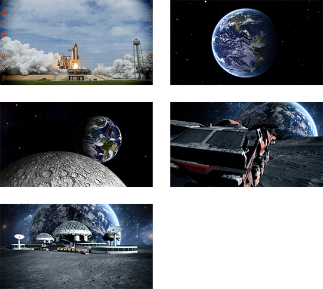

Introduce the Topic: Use the Video or Your Own Material
The moon is the natural satellite of the earth and the closest place in space that we can go to. Establishing a base on the moon, on Mars or on another planet is a quest for humanity. As humans have already been to the moon, some challenges have known solutions. Other challenges would have to be solved before we can reach this goal. For example, our ability to move objects around in space is definitely one of these challenges.
Rockets are used to send both people and materials into space. To ease astronauts’ tasks in space, robots of various functions have been developed. For example, robots can be programmed to move on their own or to grab objects. Designing robots for moon usage starts on Earth, testing behaviours and adjusting designs before sending the robots into space.

Vocabulary Words
- Moon Base
-
The common name that is given to the installations that humans could build if we wanted to live on the surface of the moon.
- Rover
-
A vehicle that is designed for a specific purpose (e.g., to explore the surface of the moon).
- Satellite
-
An object that orbits another object. The moon is a natural satellite of the earth.